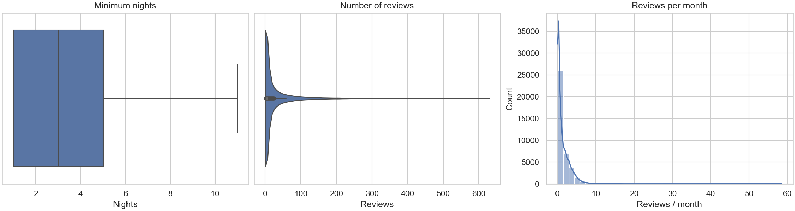
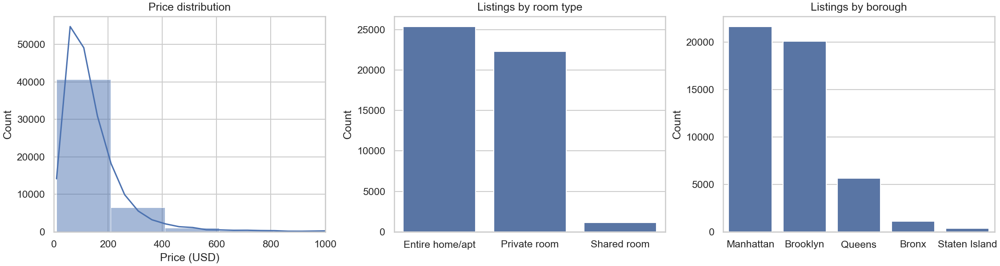
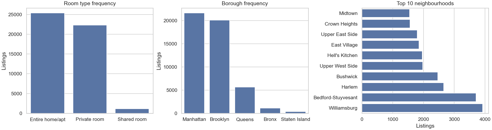
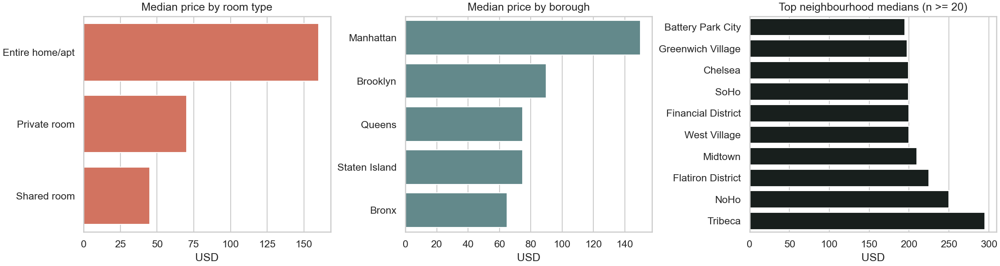
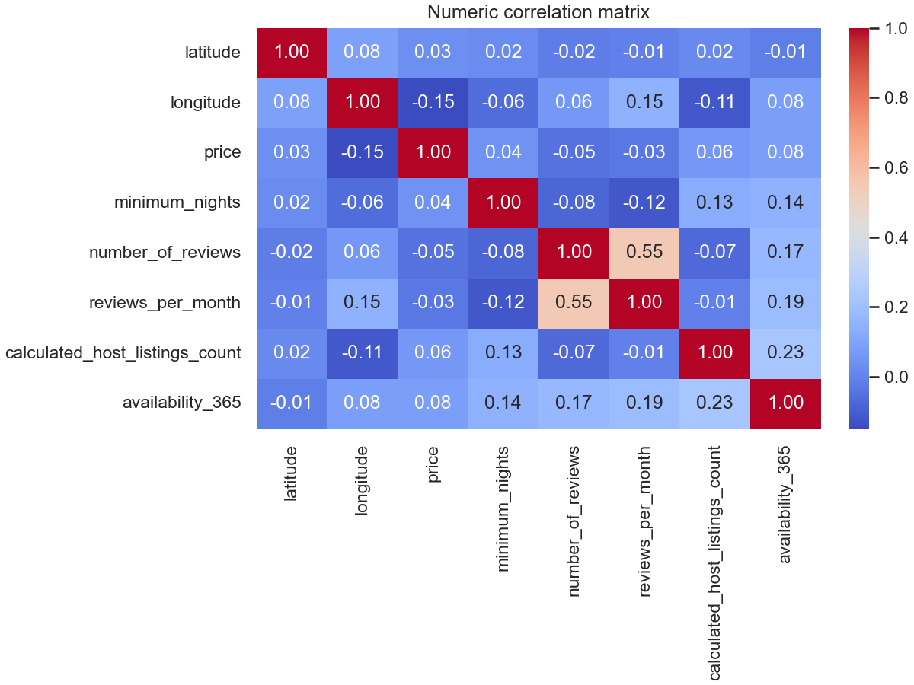
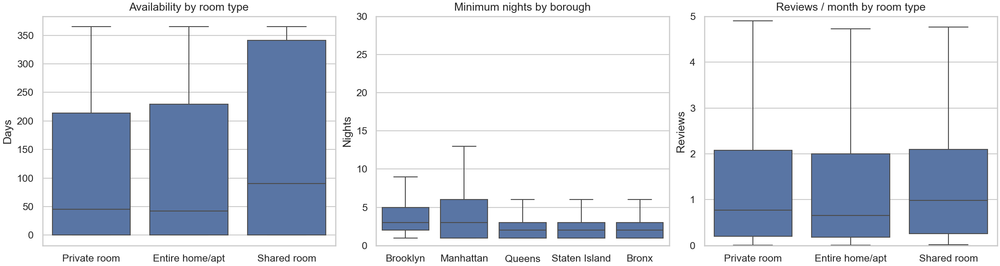
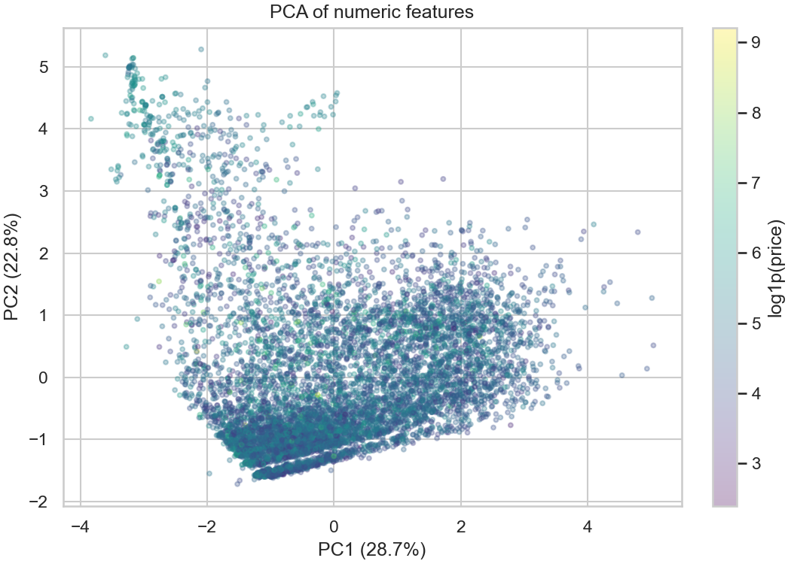

Localização pesa
Manhattan apresenta a maior mediana de preço entre os boroughs.
preço × boroughAPS1 · machine learning
Uma análise exploratória do mercado Airbnb de 2019, transformada em um pipeline Python reproduzível e pronto para a próxima etapa de regressão.
01 / leitura da base
Manhattan e Brooklyn reúnem a maior parte dos anúncios. Entire home/apt e Private room dominam os tipos de acomodação. Ainda assim, o preço varia bastante dentro dos próprios grupos.
Correlação não implica causalidade. A análise serve para revelar padrões e preparar perguntas melhores para o modelo.
Manhattan apresenta a maior mediana de preço entre os boroughs.
preço × boroughPreço, reviews e noites mínimas são assimétricos e pedem transformação logarítmica.
distribuiçãoReviews ausentes correspondem a anúncios sem avaliações. Aqui, zero tem significado.
imputação02 / preparação
O dataset tem 48.895 anúncios e 16 colunas. O target da etapa seguinte é price, preço anunciado por noite em dólares. IDs não são grandezas; last_review é uma data armazenada como texto.
É um problema de regressão. Ainda assim, room_type e neighbourhood_group são desbalanceados, o que torna grupos pequenos menos estáveis.
Numéricas: latitude, longitude, price, minimum_nights, reviews e disponibilidade. Categóricas: bairro, borough e tipo de quarto. Texto livre e identificadores não entram no modelo.
Os nulos coincidem com anúncios sem avaliações: não são necessariamente erro de coleta.
Preço, noites mínimas e avaliações têm caudas longas. A mediana descreve melhor o anúncio típico.
| variável | média | mediana | desvio |
|---|---|---|---|
| price | $152,76 | $106,00 | 240,17 |
| minimum_nights | 7,03 | 3,00 | 20,51 |
| number_of_reviews | 23,27 | 5,00 | 44,55 |
| availability_365 | 112,78 | 45,00 | 131,63 |
Estatísticas calculadas após remover apenas price = 0.



Localização e acomodação mostram associações mais nítidas que qualquer variável numérica isolada.


price são fracas; longitude é a maior, cerca de 0,15.
O pipeline usa Pipeline e ColumnTransformer. O ajuste acontece somente no treino, evitando data leakage.
reviews_per_month recebe zero, porque nulo significa nenhum review. Numéricas restantes usam mediana; categóricas, moda.
Os 11 preços zero são removidos como inconsistência do target. Caudas plausíveis são preservadas e comprimidas com log1p.
One-hot para borough, bairro e tipo. handle_unknown='ignore' e min_frequency=20 agrupam categorias raras.
A padronização equaliza escalas. O PCA exploratório em dois componentes visualiza a estrutura, mas não entra no pipeline final.

saída verificada
39.107 × 139matriz de treino processada9.777 × 139matriz de teste processada100% finitosem valores não finitosO preço é assimétrico e depende de combinações: geografia, tipo de acomodação e contexto do anúncio. Variáveis numéricas isoladas têm pouca força linear.
O conjunto de teste foi separado antes de qualquer transformação. O resultado é um pré-processador pronto para receber um regressor, com decisões rastreáveis e sem vazamento.